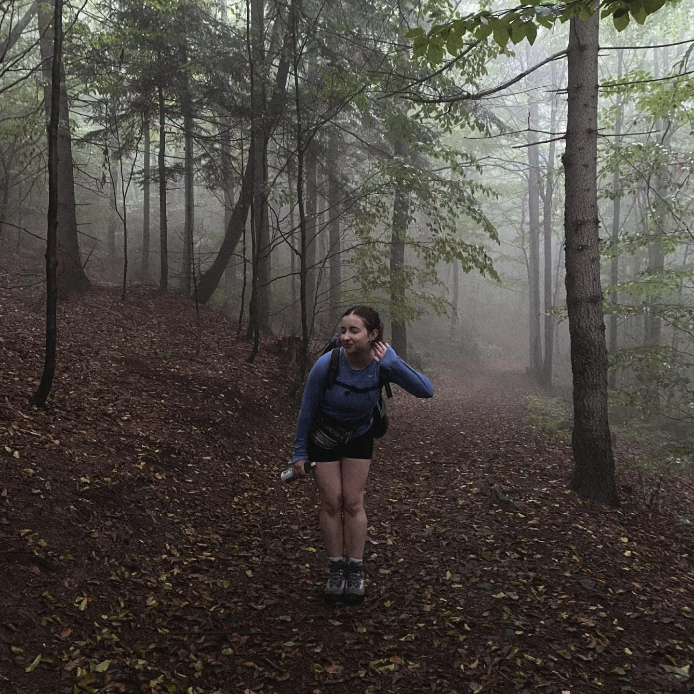
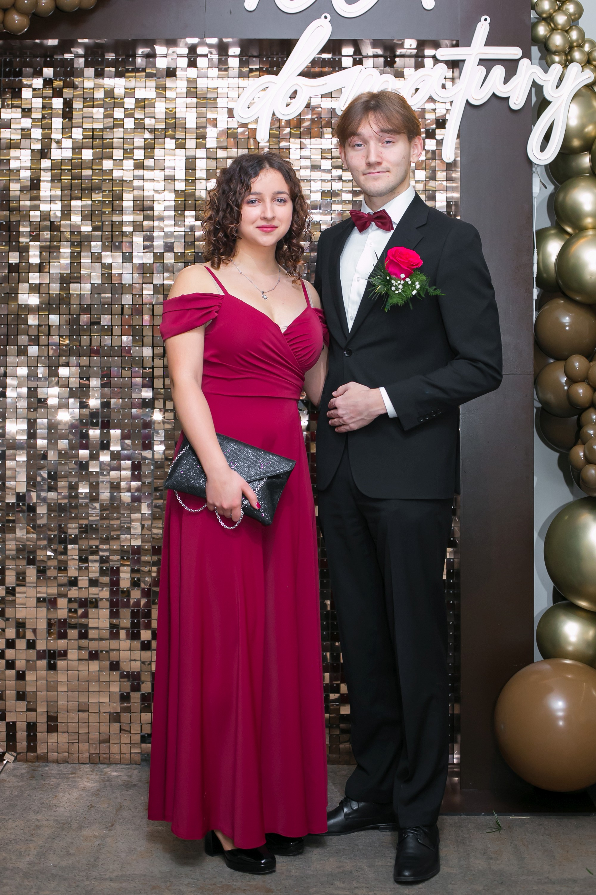

 Hello, to strona poświęcona pewnej wyjątkowej artystce... Zuzannie Bubale! Trudno opisać jak wspaniała to osóbka, ale spróbuję hehe.
🙄 Ulubione rzeczy
🎨 Artyści:
- Edgar Degas
- Paul Cezanne
- Gorzka czekolada
- Kwaśne żelki
- Kawa / Herbata
- Górskie wycieczki
- Podróże
- Łyżwy
- Oglądanie Gilmore Girls (hehe)

- Twenty One Pilots
- Florence + The Machine
- The Goo Goo Dolls
- Myslovitz
- Imagine Dragons
- Porridge Radio
- AURORA
- Paktofonika
- The Smiths
- Zostać panią Architekt/Inżynier
- Podróże

japidi
 Jest taki jeden bez równowagi
bardzo to któremu na Zuzi zależy.
I choć idealny nie jest i nie zwiedził Kopenhagi,
tak Ona jest jego słońcem więc się należy.
Włosy kręcone jak chmurki na niebie,
i oczy niebieskie jak letni deszcz,
ten ktoś chce powiedzieć: uwielbiam Ciebie,
choć czasem irytuje jak jakiś kleszcz.
Jest taki jeden bez równowagi
bardzo to któremu na Zuzi zależy.
I choć idealny nie jest i nie zwiedził Kopenhagi,
tak Ona jest jego słońcem więc się należy.
Włosy kręcone jak chmurki na niebie,
i oczy niebieskie jak letni deszcz,
ten ktoś chce powiedzieć: uwielbiam Ciebie,
choć czasem irytuje jak jakiś kleszcz.
🙄 Rzeczy, które w Tobie lubię
Dziękuję
